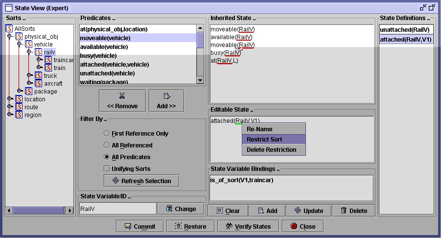

In heirarchical domains state is defined relative to the sort of an object as it is for flat domains but for hierarchical domains the description is partitioned against the sorts forming a path from a leaf sort to the root sort. You can therefore define states at different levels of generality. In figure 1 we see the state being defined for a vehicle which is in the right hand State Definitions pane defined as being either "moveable and available" or as being "moveable and busy" but a complete characterisation of the state would also include the inherited predicate "at(Vehicle,Location)" as shown in the Inherited State pane. Legal states for objects which only occur at leaf nodes in the sort tree are formed from the cross products of the state definitions in the path from the leaf node to the root node.

In the process of defining such hierarchical states it may be necessary to control the nature of the bindings of the variables appearing in the predicates defining the current level state relative to the variables in the inherited state. This is done by selecting a variable in the Editable State and the right clicking to bring up a popup menu to allow the appropriate controlling actions to take place. In the example in Figure 2 we see that this process has already been completed once in order to restrict the sort of V1 to be a traincar and the process being carried out a second time perhaps to restrict the sort of RailV to be a train. In a similar manner if variables in the inheritaed state are selected then matching variables in the Editable State are selected it is possible to ensure that the relative bindings are controlled.